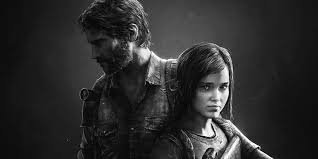
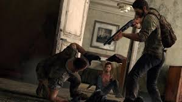
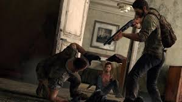

The Last of Us
Mängu nimi
The Last of Us
Platvorm, väljalaskeaeg, muu info, lühike sisututvustus
- Platvormid: PlayStation 3, PlayStation 4, PlayStation 5, Microsoft Windows
- Väljalaskeaeg: 14. juuni 2013 (PS3), 29. juuli 2014 (PS4), 2. september 2022 (PS5), 28. märts 2023 (Windows)
- Arendaja: Naughty Dog
- Kirjastaja: Sony Computer Entertainment
- Žanr: Action-adventure, Survival horror
Lühike sisututvustus: The Last of Us on postapokalüptiline seiklusmäng, mis järgib peategelaste Joeli ja Ellie lugu. Nad peavad ellu jääma maailmas, mis on langenud seennakkuse tõttu, mis muudab inimesed zombilaadseteks olenditeks. Mäng keskendub tugevale narratiivile ja emotsionaalsele sidemele tegelaste vahel.
Title screeni pilt

Story
The Last of Us lugu algab maailma lõppemisega, kui surmav seeninfektsioon levib kogu maailmas, muutes nakatunud agressiivseteks olenditeks. Mäng järgib Joeli, kogenud ellujääjat, kes kaotab oma tütre nakkuse puhkemise alguses. Aastaid hiljem palgatakse Joel, et eskortida noor tüdruk Ellie läbi Ameerika Ühendriikide, sest Ellie võib olla inimkonna viimaseks lootuseks ravimi leidmiseks. Teekonnal peavad nad võitlema mitte ainult nakatunute, vaid ka ellujäänute jõhkra maailmaga.

Gameplay
The Last of Us mängustiil ühendab endas ellujäämiselemente ja kolmanda isiku tulistamist. Mängijad peavad hoolikalt haldama piiratud ressursse, nagu laskemoon ja tervendavad esemed, ning kasutama strateegiat vastastega toimetulemiseks. Samuti on mängus palju varjumise ja hiilimise elemente, kus mängijad saavad vastaseid märkamatult elimineerida. Lisaks on mängul mitmekülgne käsitöö süsteem, mis võimaldab mängijatel luua relvi ja muid kasulikke esemeid.
 

Mängu jaoks erinevaid linke
Arvustus
Minu arvustus The Last of Us mängule:
The Last of Us on üks parimaid mänge, mida olen kunagi mänginud. Selle lugu on sügav ja liigutav, tegelased on hästi arendatud ning nende vaheline dünaamika on uskumatult realistlik. Mängu graafika ja heli on tipptasemel, mis aitab kaasa atmosfääri loomisele. Gameplay on väljakutsuv, pakkudes tasakaalu tegevuse ja strateegia vahel. Erinevatel platvormidel mängides on PlayStation 5 versioon oma graafika ja laadimiskiiruse poolest silmapaistev.